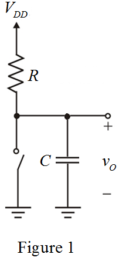
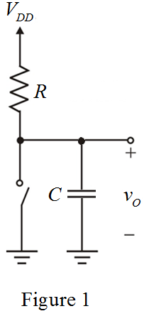
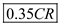
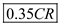
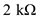
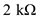

Refer to Figure 13.7(a) in the text book.
(a)
Draw the equivalent circuit when the input voltage,  is low.
is low.

Refer to Figure 13.7(a) in the text book.
(a)
Draw the equivalent circuit when the input voltage, is low.

Write the general expression for voltage across the load capacitance.
Substitute  for
for  and
and  for
for  in the equation.
in the equation.
Here,
Thus, the expression for voltage across the load capacitance is,
Derive the expression for low-to-high propagation delay.
Substitute for in the equation.
Thus, the expression for low-t0-high propagation delay is,.
(b)
Draw the equivalent circuit when the input voltage,  is high.
is high.
Substitute  for and for in the equation.
for and for in the equation.
Here,
Thus, the expression for voltage across the load capacitance is,
.
Derive the expression for high-to-low propagation delay.
Substitute for
for  in the equation.
in the equation.
Thus, the expression for high-to-low propagation delay is, .
(c)
Determine the value of propagation delay.
Substitute for  and for
and for  in the equation.
in the equation.
Thus, the value of propagation delay, is.
is.
(d)
Apply Kirchhoff’s voltage law to the loop between  and ground.
and ground.
Substitute  for
for  in the equation.
in the equation.
Derive the expression for power dissipation during low output state.
Substitute for  in the equation.
in the equation.
Apply Kirchhoff’s voltage law to the loop between  and ground.
and ground.
Substitute  for
for  in the equation.
in the equation.
Determine the value of power dissipation during high output state.
Substitute for and for in the equation.
Thus, the expression for average static power dissipation is,
.
(e)
Determine the value of resistance when.
Substitute for  and
and  for
for  in the equation.
in the equation.
Determine the value of resistance when.
Substitute  for
for  and for in the equation.
and for in the equation.
Thus, the specific range for resistance is
Consider,
Determine the value of propagation delay.
Substitute  for
for  and for
and for  in the equation.
in the equation.
Thus, the value of propagation delay,  is .
is .
Determine the value of average static power dissipation.
Substitute  for
for  and  for
and  for  in the equation.
in the equation.
Thus, the value of average static power dissipation, .